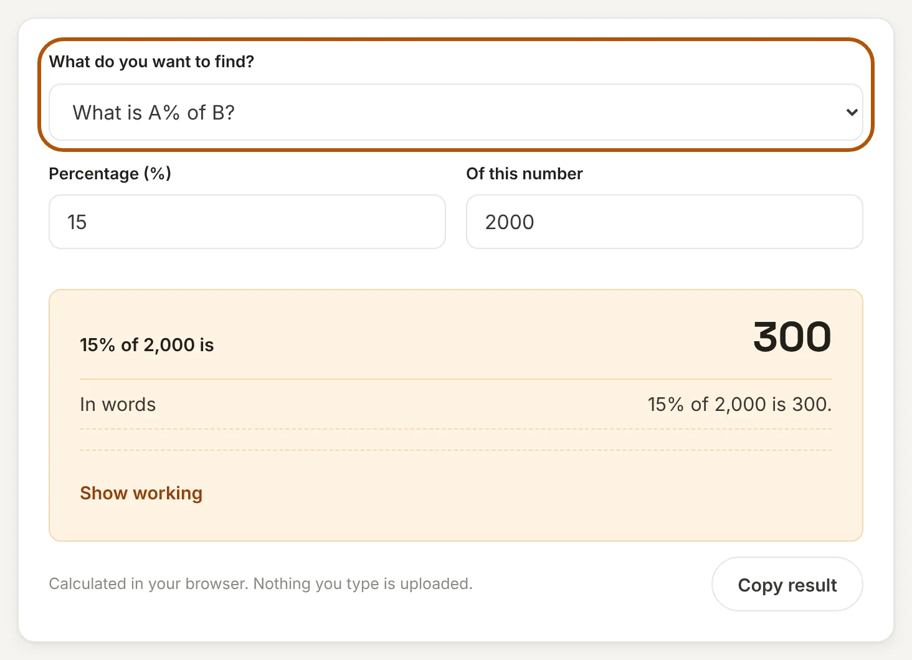
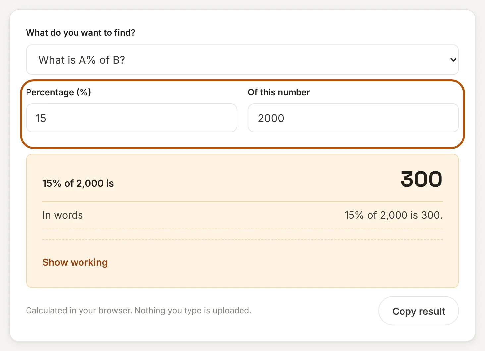
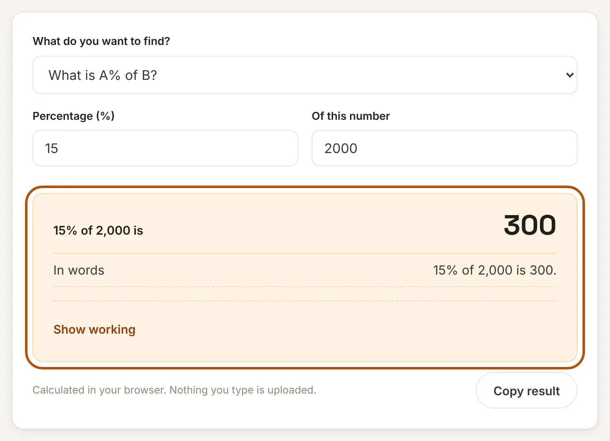
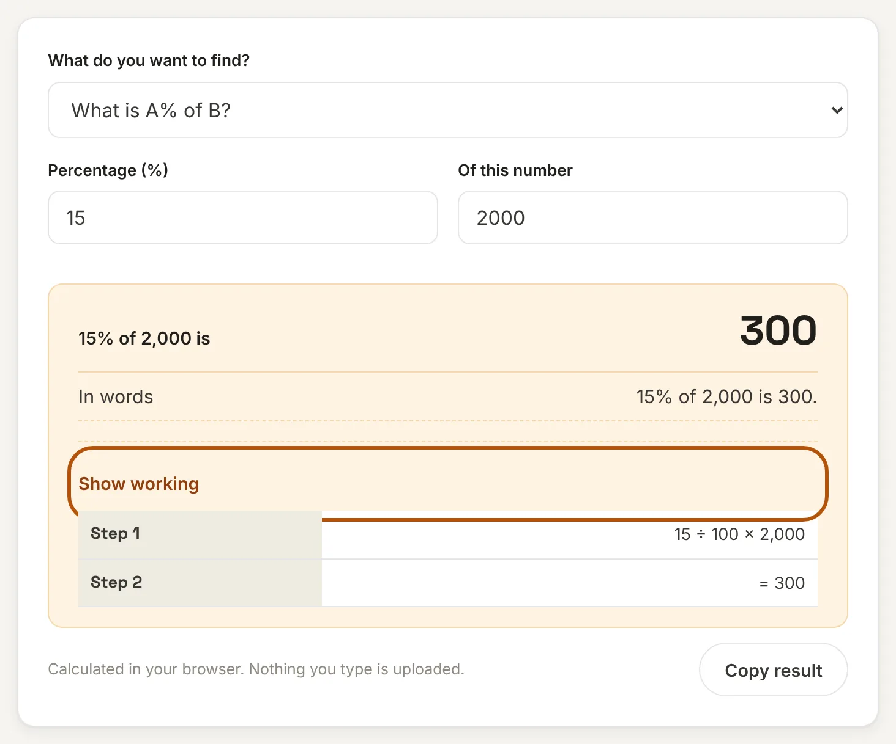

What is a percentage calculator?
A percentage is a number out of 100, and "percent" means "per hundred". We use percentages for discounts, GST, marks, salary hikes, interest rates and price changes. The arithmetic is simple, but it is easy to put the wrong number in the wrong place.
This percentage calculator solves the five questions people ask most: what is A% of B, A is what percent of B, the percentage change from one value to another, and how to increase or decrease a number by a percentage. Pick the question, enter two numbers and read the answer along with the working.
How to use this percentage calculator
Step 1: Choose what you want to find
Open the drop-down and pick the question that matches yours, for example "What is A% of B?" for a discount or "% change from A to B" for a price rise. The labels of the two boxes change to match.

Step 2: Enter the two numbers
Fill in the two boxes. Each box is named for what it holds, such as "Percentage (%)" and "Of this number", so you do not have to remember which comes first.

Step 3: Read the answer
The answer appears as you type, together with a sentence that spells out what it means, such as "15% of 2,000 is 300." Use Copy result to save it.

Step 4: Check the working
Open Show working to see the formula with your numbers filled in, so you can follow the steps or copy them into your notes.

Percentage formulas
| Question | Formula | Example |
|---|---|---|
| A% of B | A ÷ 100 × B | 15% of 2,000 = 300 |
| A is what % of B | A ÷ B × 100 | 45 is 25% of 180 |
| % change from A to B | (B − A) ÷ A × 100 | 80 to 100 = +25% |
| Increase B by A% | B × (1 + A ÷ 100) | 500 + 20% = 600 |
| Decrease B by A% | B × (1 − A ÷ 100) | 500 − 20% = 400 |
Everyday examples
- Discount: A shirt costs ₹1,999 and is 15% off. Choose "Decrease B by A%": the price becomes ₹1,699.15, a saving of ₹299.85.
- GST: ₹1,000 plus 18% GST is ₹1,180. Choose "Increase B by A%". For a full GST breakdown use the GST Calculator.
- Marks: You scored 432 out of 600. Choose "A is what % of B": that is 72%.
- Salary hike: A salary rising from ₹40,000 to ₹46,000 is a 15% hike. Choose "% change from A to B".
- Interest: To find the interest on a deposit, use the Simple Interest Calculator.
Mistakes that give the wrong answer
An increase and a decrease of the same percent do not cancel out
Raise 100 by 20% and you get 120. Take 20% off 120 and you get 96, not 100. The second percentage is applied to a bigger number. To get back from 100 to 80 after a 25% rise from 80, you need a 20% fall, not 25%.
Percent and percentage points are different
If an interest rate moves from 7% to 8%, it has risen by 1 percentage point. In percent terms it has risen by 14.29%, because 1 is one-seventh of 7. News reports often mix the two up.
The base number matters
"A is what percent of B" divides by B, the total. Swap the two and you answer a different question: 45 is 25% of 180, but 180 is 400% of 45.
Frequently asked questions
How do I calculate a percentage of a number?
Divide the percentage by 100 and multiply by the number. For 15% of 2,000 that is 15 ÷ 100 × 2,000 = 300.
How do I find what percent one number is of another?
Divide the first number by the second and multiply by 100. For 45 out of 180 that is 45 ÷ 180 × 100 = 25%.
How do I calculate percentage increase or decrease?
Subtract the old value from the new value, divide by the old value and multiply by 100. A positive result is an increase and a negative result is a decrease. From 80 to 100 it is 20 ÷ 80 × 100 = 25%.
How do I add or subtract a percentage from a number?
To add 20% to 500, multiply by 1.20 to get 600. To subtract 20%, multiply by 0.80 to get 400. The calculator does this when you choose "Increase B by A%" or "Decrease B by A%".
Can a percentage be more than 100?
Yes. 120% of 50 is 60. A value that doubles has grown by 100%, and one that triples has grown by 200%.
Is my data sent to a server?
No. This tool runs entirely in your browser. What you enter is never uploaded or stored.
Disclaimer: This tool gives results for convenience. Check important figures, such as tax or loan amounts, against official documents. See our disclaimer.